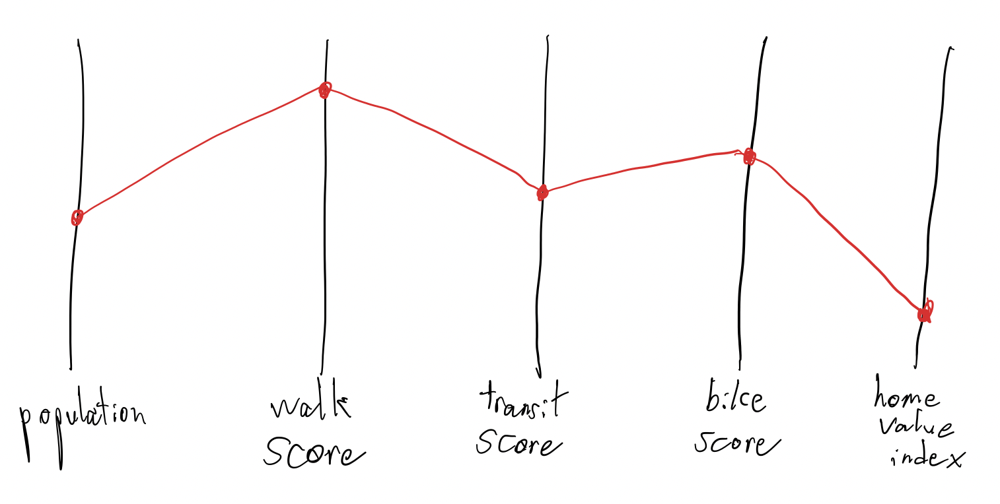
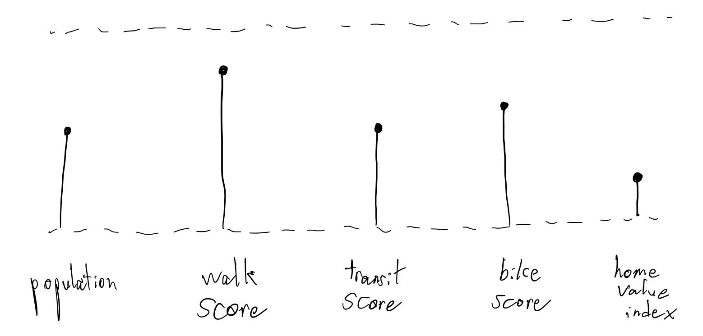
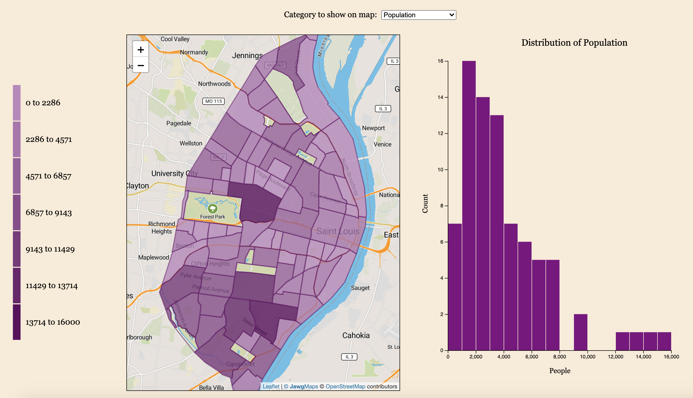
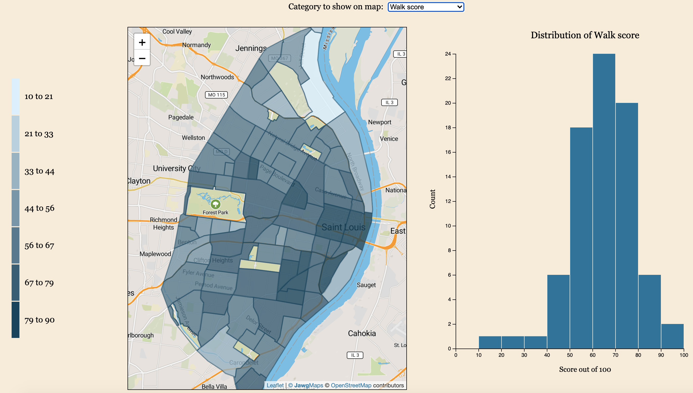
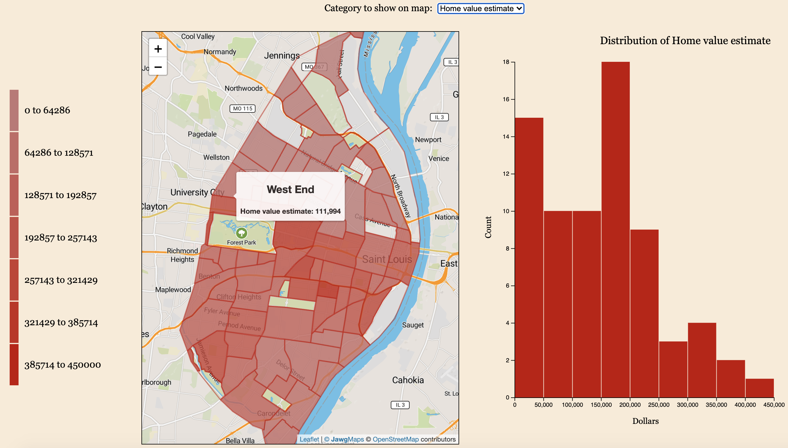
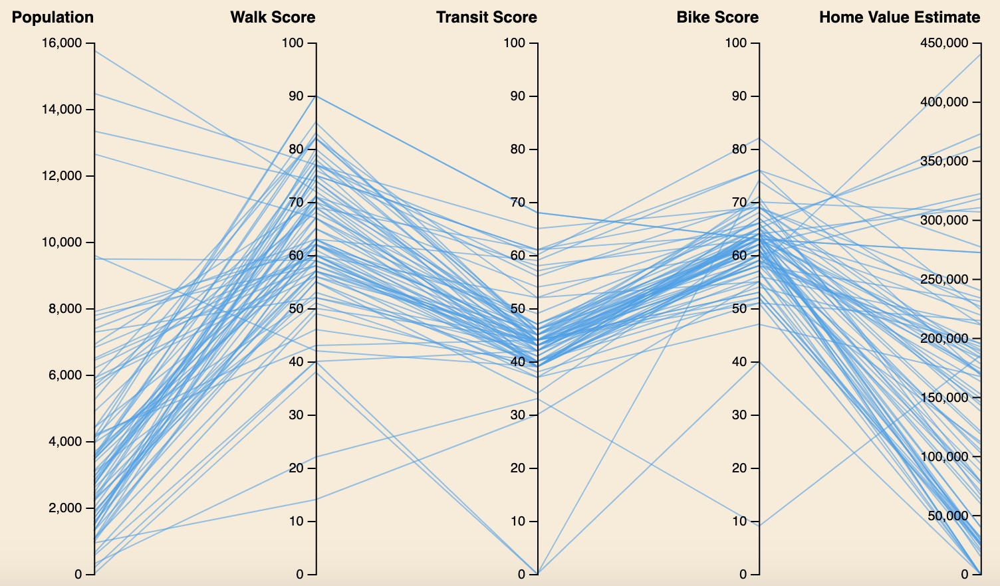
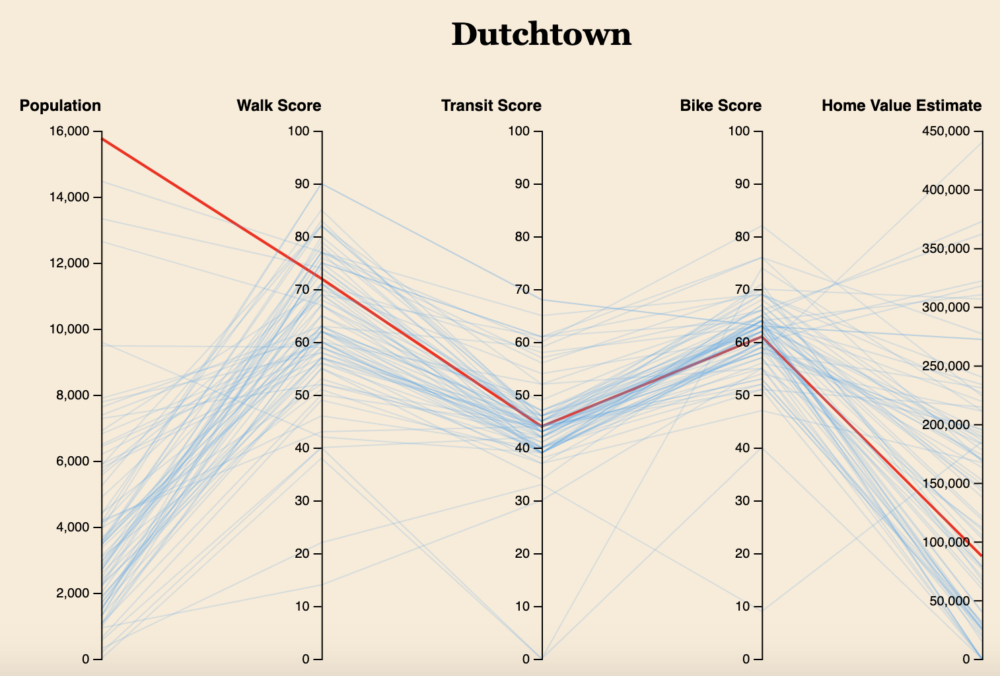

Basic Info
Team Name: The Industry Standards
Group members: Brian Hall, Logan Press, Matt
Halom
Student IDs: 455024, 457670, 457234
Overview and Motivation
Our primary motivation for this project is to gain a more comprehensive understanding of the city of St. Louis to complement our topical impressions. We can accomplish this by analyzing concrete metrics related to several aspects of the city (see data) to create an interactive tool to explore St. Louis. This tool also serves to compare our subjective understandings of the city with objective measures. As of Milestone I, our fundamental visualization segments the distinct neighborhoods of St. Louis using a topographical map view. In the final implementation of the project, users can view the values of a selected metric across all neighborhoods in the map view, and the parallel plot displays the values of all metrics for each neighborhood. Users can click on a neighborhood's area in the map view to highlight the corresponding line in the parallel plot, and several neighborhoods can be selected at once to be able to easily compare different neighbhorhoods.
Related Work:
Our desire to allow users to interactively explore a city was heavily inspired by the New York City project shown in lecture (which we can't find now). Studio 9 inspired us to use Leaflet, because we were really interested in using its ability to overlay geoJSON data. We were also inspired to convery our data (at least partially) as a choropleth map by the tile map from assigment 2.
Questions
Our objective is to create a highly interactive and engaging exploratory visualization for St. Louis which answers these questions for the user:
- What is the value of each metric in a given neighborhood?
- Which neighborhoods have the highest values for a given metric?
- How do the values of all metrics or a specific metric for one neighborhood compare to those of other neighborhoods?
- For users that are familiar with St. Louis and its neighborhoods, how do the visualizations and available metrics either reinforce or contradict one's preconceived notions of different areas of St. Louis?
Data
Our dataset consists of two data structures: a file with geoJSON data that allows us to overlay neighborhood boundaries, and another JSON file data that contains population, walk score, bike score, transit score, and ZHVI ( Zillow Home Value Index) for each neighborhood.
- City-Scoped Data -
-
Neighborhood-Scoped Data -
- Population
- Mobility:
- Economy:
Exploratory Data Analysis
Our dataset consists of information from
many different sources that we pieced
together ourselves. Rather than finding a
dataset and exploring it to see how it could
be represented, we had design ideas in mind
and created our dataset so that we could
execute those ideas. As a result, we didn't
find it necessary to explore our data
visually. We became familiar with it just by
the nature of how we collected and
synthesized it.
That said, we did gain some insights while
brainstorming how we would represent the
data on the website for users to see. We
initially discussed some designs to view the
data for a single neighborhood (which can be
seen in Iteration III of Design Evolution),
and we quickly discovered that our data
wasn't particularly well-suited for this.
Instead we settled on displaying a single
metric at a time for each neighborhood (at
least for Milestone 1).
Design Evolution
Iteration I -
Our initial visualization ideas centered around mapping the metro lines, as seen in the top two sketches below. The idea was that we could display a granular view of St. Louis's population distribution to visualize mobility with respect to how certain areas are disproprtionately served by the metro system. The first idea was to use markers with tool-tips to display population along with other data for each neighborhood. We then decided on visually encoding population like in a choropleth map as seen on the right. The main problem with these designs is that they focus too heavily on mobility and don't incorporate economic or environmental factors. To incorporate environmental data, we thought of including a bar graph indicating average temperature for each month. For economic data, we designed a focus view of the map with markers representing local businesses that the user can scroll over or click on to see more information. You can see how all these ideas were better fleshed out and synthesized under Iteration II.


Iteration II -
For the project proposal, We incorporated the "filters" which adopt different lenses through which users may view the data. The filters are each of our target categories: Mobility, Economy, and Environment. These filters allow us to create different choropleth maps for each target. When a user hovers over a neighborhood, they see a tooltip with a breakdown of the neighborhood's information. Clicking on a neighborhood in one of these views expands the neighborhood visualization for the selection with the corresponding filter. For example, if the economy filter is selected, the neighborhood view shows markers for local businesses at their locations. Clicking on one of these markers opens another tooltip which provides information about the business itself.
City Views:


Neighborhood Views:


Iteration III -
This iteration incorported the choropleth map we designed as an overlay on a Leaflet map of the city. First, we obtained a zip folder from the City of St. Louis website with a shapefile and auxiliary info for the St. Louis City neighborhoods. We plugged it into the ogr2ogr web client using the correct target coordinate system and obtained the GeoJSON file we used for the overlay. For the data, we decided that instead of each overall "category," (mobility, economy, environment), we would include every individual metric as an option to filter, which may better answer the user's questions in case they are trying to compare neighborhoods by a specific measure. We gathered St. Louis Metro data, and after a lot of working with QGIS and trying to get the correct geoJSON format, we were unable to get the routes to overlay on the city properly. Because environmental data is only gathered by city and not by neighborhood (and most historical weather data you have to pay for), we decided against including climate, air quality, and precipitation data on a per-neighborhood basis. When the user hovers over a neighborhood in the choropleth map, a tooltip appears displaying the name of the neighborhood and the value of whichever metric is currently selected by the user. For the single-neighborhood visualization, we attempted redrawing the geoJSON feature for the selected neighborhood, but after many attempts we didn't get it working for this iteration. We began a class for this visualization with the defined methods, and currently, whenever a neighborhood is clicked, the text of its name is displayed below the city visualization. We attempted to use a radar graph for comparing the neighborhood's attributes, but the library we were using was deprecated, and after doing some of our own research we realized that the radar graph is criticized by visualization experts. Instead, we looked at other types of plots such as parallel plots or normalized bar charts. All in all, we gathered nearly all the data we need; we are just missing some local businesses (Matt's domain) and zillow data for a few neighborhoods (Brian was able to get data for most of the neighborhoods).

This is a zoomed in view of the Central West End Population data. the Central West End is the most populous neighborhood in St. Louis, so we have used it in this process book as our quintessential example.

This is a zoomed in view of the Central West End Home Index data. Similarly, this information describes the average price of a home in the Central West End

Same Idea. Utilization of WalkScore API

This is a full screen view of the entire Map. The Opacity for each neighborhood represents the magnitude of the metric at hand. In this case(purple), represents population density

A sketch of a possbile radar graph for our neighborhood metrics, which we discarded.

A sketch of a possible parallel plot for the different neighborhood metrics.

A sketch of a potential bar plot for the different neighborhood metrics.
Iteration IV -
For this iteration, we added two new views to the website, based on our reflection on the last milestone. One of these is the neighborhood histogram - this graph creates bins based on whichever category is selected by the user, and plots how many neighborhoods have a value within each of those bins. When the category is changed, a transition is triggered as the bars change to reflect the category. The second visualization is a parallel plot, similar to the one diagrammed in Iteration III. This parallel plot has a series for each neighborhood, and there is one axis for each category. When a user selects a neighborhood in the map, the name of the neighborhood appears above the parallel plot, and the line corresponding to the selected neighborhood becomes highlighted in red. When this occurs, all other lines become more transparent.
In addition to these two visualizations, we polished the original map. We removed the original opacity scale in favor of a new color scale. Along with this new scale we added a legend that runs vertically along the length of the map, and changes for each different category based on user selection. Finally, for neighborhoods for which we didn't have data for a certain category, we ommitted those from the range of values when calculating the scales, as well as from the shading in the choropleth map. When the user hovers over such neighborhoods, they now see a value of "Data unavailable" in the tooltip. The remaining work between this iteration and the final deliverable we believe will be mostly polish and making sure the visualization effectively answers the users' questions. Hopefully in this time, we will do plenty of field testing and iterative adjustments.
Neighborhood Visualizations:
  
Parallel Plot:
 
Evaluation:
Q: What did you learn about the data by using your visualizations? How did you answer your questions?
A: We learned that the "better" scores aren't always around the populated areas. We figured that we may have seen a stronger correlation, given our intuition about certain metrics scaling as population grows (see: Scale by Geoffrey West), but the individual St. Louis neighborhoods tell a more complex story. One of the starkest metrics to look at is the Home Value Estimate. There is a noticeable contrast between the north and south halves of St. Louis, and that isn't just due to the missing data. The estimates in the northernmost neighborhoods are significantly lower than their southern counterparts. The particular neighborhoods with missing home estimate values even reinforce this observation in a way; most of them are located north of Delmar Blvd., and we couldn't find home value estimates because homes just aren't being sold in those neighborhoods. This visualization really highlights the notion of the "Delmar divide" and the economic disparities in the region. It's also clear through looking at the transit score that the metro runs through the middle of the city east-west.
Q: How well does your visualization work, and how could you further improve it?
A: The visualization does a really good job at giving a high-level view of the city with regards to quick, easy metrics. While this makes it easy for the user to gauge the area, it can also be a weakness because the metrics are not comprehensive. They doesn't give the user an in-depth understanding of the city's dynamics, but to do that is a tall order. I think the distributions of the neighborhoods with respect to each category is also very clear; both the histogram and the parallel plot make the distributions easily understood.
Implementation:
Q: Describe the intent and functionality of the interactive visualizations you implemented.
A: The intent is to provide a space for the user to explore different metrics related to the city on a neighborhood-level granularity, which can answer questions about the city's livability and workability with regards to these metrics. The choropleth map provides a visual breakdown of different scores and their gradient from one geographical area to the next; so, a user could see geographic clusters and patterns where nearby neighborhoods are similar or different. The histogram also shows the distribution of neighborhoods in general, so a user could potentially see how one neighborhood stacks up to the others. When a user is interested in a particular neighborhood, they can see all the metrics of the neighborhood at once on the parallel plot, and conclude whether it is similar or different than the rest.
Q: Provide clear and well-referenced images showing the critical design and interaction elements.
A: These are provided in the Iteration III and Iteration IV sections.
Project Timeline
| Dates | Objectives |
| Nov 23rd - Milestone I | Initial Prototype Complete & Data Wrangling Complete. |
| Dec 7th - Milestone II | Fully Functioning Prototype is launched to the web. |
| Dec 14th - Last week of classes | Presentation Done, Finalized Exploratory Visualization Prototype Complete. |
| Jan 6th - Project Done and Hosted on the web. | Project complete, sharing it with the world! Consider adding more cities to the tool. |
Meetings and Workflow
- Weekly Meeting on Saturday at 10:00 am CST; during this time we check in and implement our visualization as a group
- Continue working most of Saturday afternoon, and Sunday if needed. And likely also Monday.
- Evaluate weekly meeting schedule once Logan goes home (Pacific Time)
- Communication via Slack, iMessage, and Zoom. Brian doesn't have a Mac.
- Maintain appropriate moral and Industry Standards.